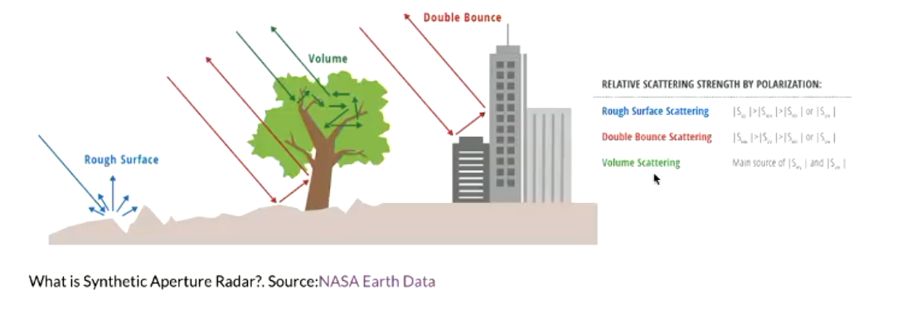
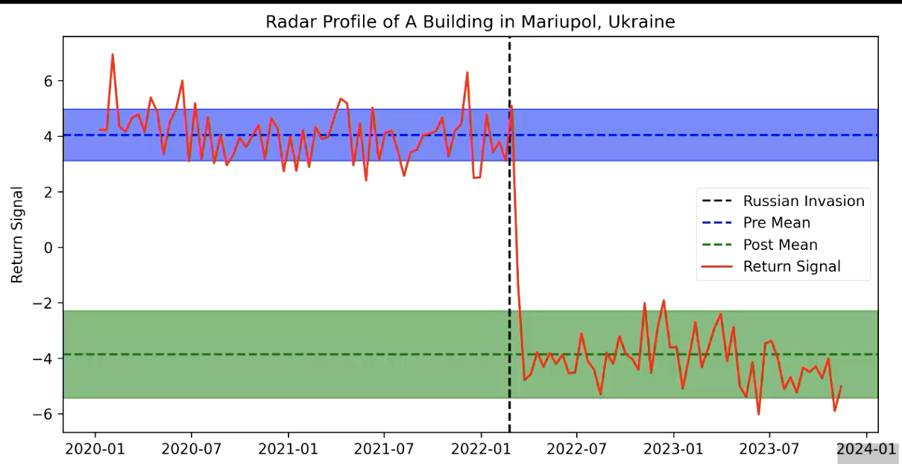

Syntactic Aperture Radar
Summary
In this lecture, we cover Syntactic Aperture Radar (SAR). Below I explain what it is and what kind of analysis it can be used for?
In remote sensing there are passive and active sensor, where the former uses the sun as source of light and the latter provides their own illumination. We saw this in week 1. SAR is an active sensor. It works a bit like a bat. It sends out a radar signal. The signal meets an object and bounces back. The sensor “listens” to the reflected signal. The nature of the returning signal tells us information about the earth surface, about the object it bounced back from. Hence, SAR is generating information about the earth typology. The sea for example is a flat surface and, therefore, reflects the radar signal into space rather than towards the sensor. The sea therefore usually looks very dark on a radar image. SAR images can be used to detect floods (flat surface). Sentinel 1 is an example of SAR.
Unlike optical sensors, which measure a wide range of electromagnetic waves across the spectrium using different bands, SAR sends out only very specific wavelengths (a narrow fraction of the electro magentic spectrum). In SAR sensors, different wavelengths are chosen to measure different things. The most common wavelength are C-Band radio magnetic waves.
SAR sensors are off nadir and they are moving. The fact that a SAR sensor is in motion effects the way in which it receives waves. In a normal camera, aperture refers to size of the opening through which we let light in. A high aperture means more light in the camera achieving higher resolution. In SAR, this is governed by the antenna. For high resolution we would need a really long antenna. We can simulate a long antenna and achieve high resolution by taking images of the same point multiple times and thereby increase resolution.
SAR polarization refers to the SAR sensor being able to transmit and receive electro-magnetic signal horizontally and vertically. Different earth surfaces reflect differently in terms of vertical and horizontal waves. The image below shows how different objects reflect differently.
Interferometry is a SAR technique that combines multiple SAR images over the same region at different times to detect change in the earth surface. This is for example, very useful to detect movement on the ground surface for earth quake risk detection. However, sadly this is not stored in GEE.
In GEE different types of SAR data is available. Sentinel 1 is the most commonly used. Power Scale is the raw data. DB scale (decibel scale) is the multiplying 10 times the Log10 value of the power scale value. DB scale is better for visualisation but needs to be treated differently in statistical analysis.
Application
Identifying buildings that have been damaged in conflict due to fighting. The current state of the art to do this is using High Resolution Images and Neural Networks – as I discussed last week. There are a few problems with this approach: It's computationally and financially expensive. Another problem is that optical images are not always available, e.g. when there are clouds. Neuro Networks ….. Go back to min 01.02
How do you differentiate between general change and building damage. Comparing it with the building footprint.


Also reference the economist fire method for detecting fighting.